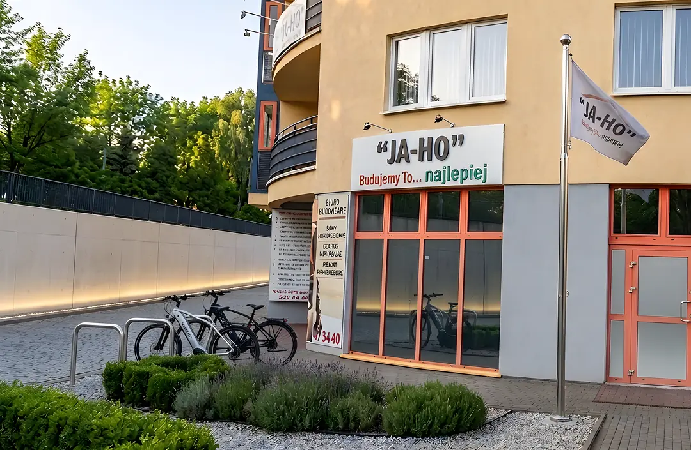
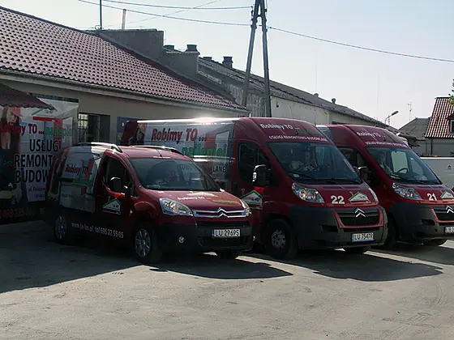
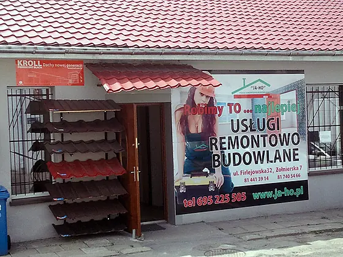
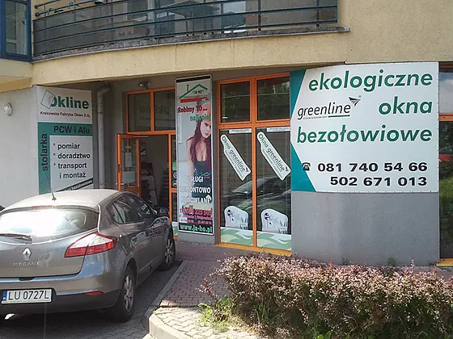
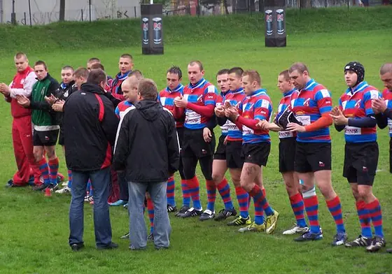
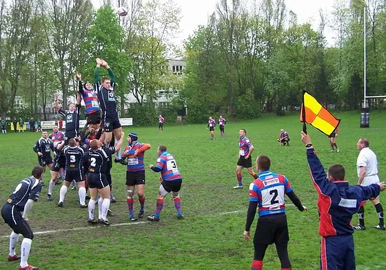
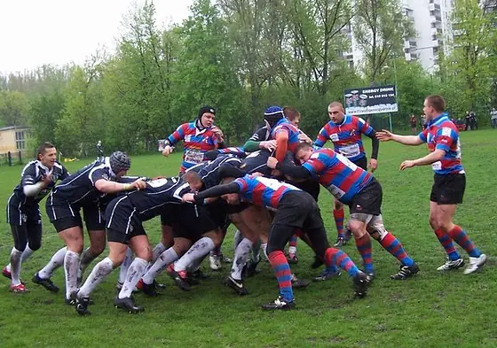

Dwadzieścia siedem lat, dwa profile, jeden standard
Firma powstała w czerwcu 1999 roku jako działalność handlowo-usługowa. Podstawą działalności była sprzedaż i montaż stolarki budowlanej.
W lipcu 2004 roku, po wejściu Polski do Unii Europejskiej, zmieniliśmy siedzibę i profil działalności firmy na wyłącznie usługowy. Głównym naszym zajęciem stały się remonty mieszkań, biur oraz wykończenia wnętrz, a uzupełnieniem oferty pozostała sprzedaż i montaż stolarki budowlanej.
Nasza firma wyposażona jest w profesjonalne elektronarzędzia do wszystkich robót. Wieloletnie doświadczenie pracowników w tej branży, ich kwalifikacje i regularne szkolenia pozwalają nam podnosić jakość wykonywanych usług, spełniając stale rosnące wymagania naszych klientów.
Stała kontrola, nadzór i kontakt z klientem pozwalają na szybkie rozwiązywanie ewentualnych usterek czy reklamacji. F.R.B. „JA-HO” kładzie duży nacisk na jakość wykonywanych usług, czego dowodem są klienci z polecenia od naszych byłych, obecnych i stałych zleceniodawców.
Klient jest zadowolony — horyzont „JA-HO” poszerzony.
właściciel, dyrektor generalny

Jak tu doszliśmy
Powstanie firmy
F.R.B. „JA-HO” powstaje w czerwcu 1999 roku jako działalność handlowo-usługowa. Podstawą działalności jest sprzedaż i montaż stolarki budowlanej.
Przejście na profil usługowy
W lipcu 2004 roku, po wejściu Polski do Unii Europejskiej, zmieniamy siedzibę i profil działalności firmy na wyłącznie usługowy. Głównym zajęciem stają się remonty mieszkań, biur oraz wykończenia wnętrz.
Dwa filary, jeden region
Usługi remontowo-budowlane uzupełnione o sprzedaż i montaż stolarki budowlanej — na terenie Lublina i całego województwa lubelskiego.
Dorobek do dziś
Nieprzerwanie od czerwca 1999 roku.
Każde zrobione na budowie JA-HO.
Od domów jednorodzinnych po zabytkowe elewacje.
Firmy, dla których pracujemy wielokrotnie.
Siedziba i flota
Aby szybko i profesjonalnie realizować powierzone nam prace, dysponujemy nowoczesną flotą i własnym sprzętem.



Klienci, dla których pracujemy
Nasza firma stale współpracuje z klientami z sektora bankowego, spożywczego, piwowarskiego i motoryzacyjnego. Najlepszą referencją są jednak dla nas klienci z polecenia — od naszych byłych, obecnych i stałych zleceniodawców.
Dofinansowano ze środków Funduszu Ubezpieczeń Społecznych
Projekt dotyczący utrzymania zdolności do pracy przez cały okres aktywności zawodowej.
Projekt dofinansowany ze środków Funduszu Ubezpieczeń Społecznych, dotyczący poprawy warunków BHP i bezpieczeństwa pracy naszych pracowników poprzez zakup profesjonalnego sprzętu budowlanego.
tytuł projektu
Sponsorujemy lubelski sport
JA-HO jest sponsorem sekcji rugby Budowlani Lublin. Budowanie regionu to coś więcej niż stawianie ścian — to także wsparcie dla tych, którzy grają w jego barwach.



Masz projekt do wyceny?
Dokonujemy oględzin, pomiarów i wyceny wstępnej. Zadzwoń albo napisz — odpowiadamy na każde zapytanie w ciągu 24 godzin.